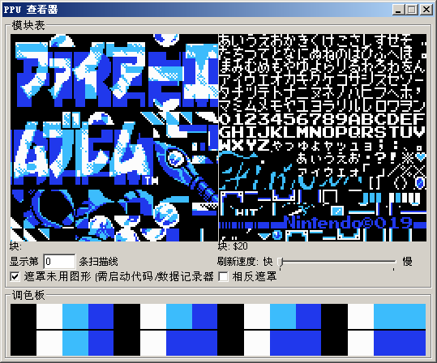
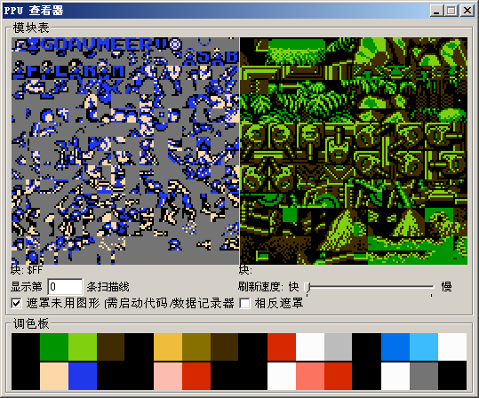
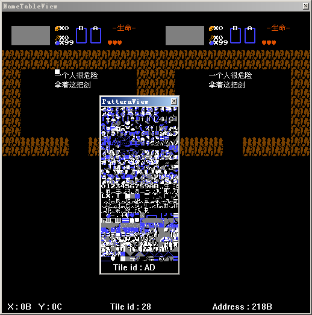

正文: 关于咋的高答案的各位说的很清楚了，说点别的
不谢邀，FC一个块就是8px,所以你看国内汉化FC如果用小字的都是贼不清楚，模糊一团看不清
但如果单纯只是日文或英文可以看出8px还是够用的
关于魂斗罗的ppu
所以为什么要曲腿，这样可以省下一个块的
那你可能要问如果我要汉化但8px不足以支持一个能看清楚的字怎么办，凉拌呗
就是拼字咯，一个块不够那就用两个块，两个不够用四个，就是这么粗暴
所以可能你会看到现在还有挺多FC游戏没汉化，机能限制，不过也延伸出一邪道
外挂汉化，这个是依赖特制的模拟器，比如天下第七的圣火徽章外传，rom模拟器一体
没了